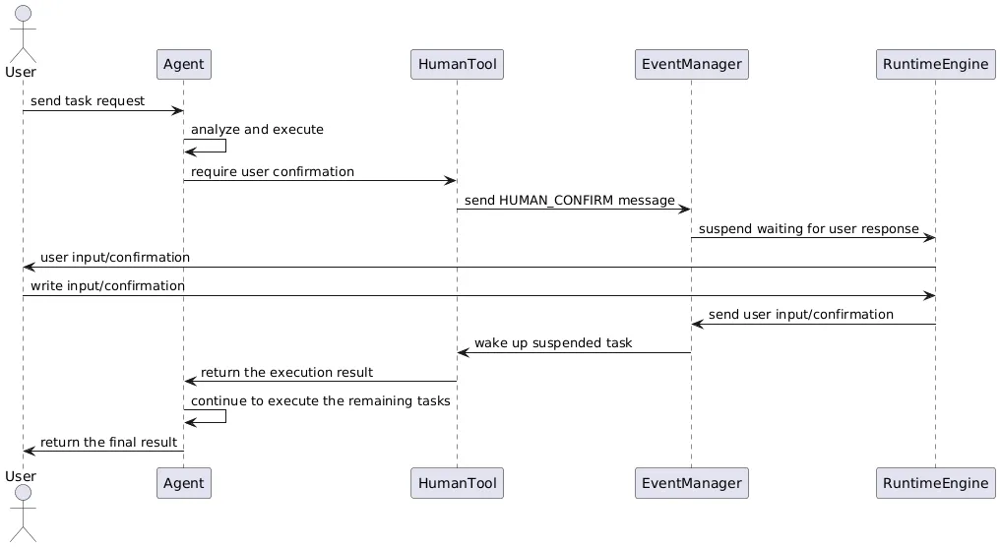

Hitl
As an advanced multi-agent framework, AWorld places strong emphasis on user involvement in its design.
The Human in the Loop (HITL) capability allows users to intervene at critical decision points in the AI workflow, ensuring system safety and accuracy—especially when handling sensitive operations or tasks that require human expertise.
- Enhanced Safety: By requiring user confirmation at key action points, the system effectively mitigates risks from malicious or erroneous operations, particularly in scenarios involving financial transactions or access to sensitive data.
- Increased Trustworthiness: In domains that require expert judgment, human oversight improves the credibility of system decisions and ensures that critical choices undergo appropriate review.
- Regulatory Compliance: In regulated industries such as finance and healthcare, HITL mechanisms help satisfy legal requirements for human review and approval.
The design of HITL functionality follows several core principles:
- Minimal Intervention: Users are only prompted when necessary—typically when encountering specific authorization barriers—not during routine operations.
- Clear Boundaries: Strict delineation of which actions require explicit user confirmation.
- Security Assurance: User intervention is triggered for sensitive operations (e.g., login, payment, admin-level actions).
HITL process
AWorld implements HITL based on tools and events, example.

HumanTool
HumanTool is a built-in utility dedicated to human-AI collaboration. When user input is required, the agent invokes this tool, emits a HumanMessage event, and pauses the task execution until a response is received. Once the user replies, the system treats the response as the tool’s execution result and resumes the workflow.
Event Messaging
AWorld uses the HumanMessage event type to manage human-AI interactions. This message carries the information that requires user confirmation or input.
This design enables the system to send a request for human intervention at any point in the execution flow and wait for a response before proceeding.
Agent Integration
Developers can enable human-in-the-loop functionality by registering the human tool within an Agent. The Agent autonomously determines when human input is needed and constructs an appropriate tool-call request.
from aworld.tools.human.human import HUMAN
agent = Agent(
conf=agent_config,
name='human_test',
tool_names=[HUMAN]
)
Rule-Based Intervention
Intervention can also be triggered by predefined rules. For example:
When a terminal command requires administrator privileges, the system prompts: “This operation requires admin rights. Please confirm whether to authorize execution.”
from aworld.tools.human.human import HUMAN
from aworld.utils.run_util import exec_tool
# trigger after match
context = your_context or Context()
exec_tool(tool_name=HUMAN, action_name="HUMAN_CONFIRM",
params={"confirm_content": "This operation requires admin rights. Please confirm whether to authorize execution."},
agent_name="human", context=context)
Trigger Conditions
HITL can be activated in the following scenarios:
- Browser automation encounters login, authentication, or payment pages
- Terminal commands require
sudoor administrator privileges - File system tools attempt to access protected directories
- Information gathering or analysis tasks require domain-specific user knowledge
- Content retrieval needs additional search criteria from the user
- Data processing or report generation requires user “sign-off” to finalize
- Decision-making or task completion requires compliance verification
- Explicit approval is needed before proceeding with a high-risk action
In a Word
AWorld HITL capability through a thoughtfully designed tool system, messaging mechanism, and usage policies—enables timely human judgment precisely when needed. This not only enhances system safety and reliability but also embodies the principle that AI systems should be controllable by design. By preserving AI autonomy while guaranteeing user authority at critical moments, AWorld lays a solid foundation for building trustworthy AI applications.